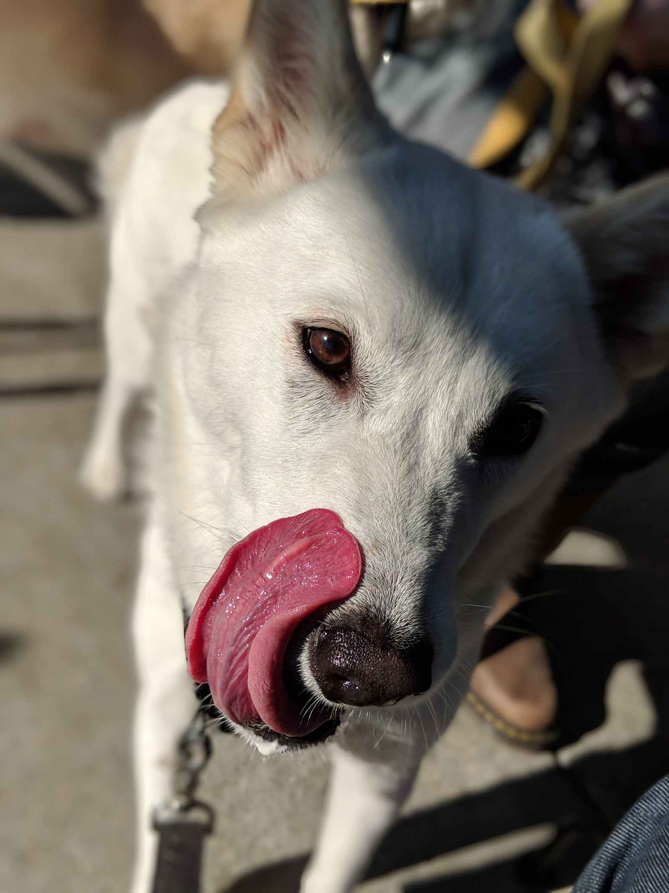

Locations at:



The only cookie stand in the world to earn three Michelin stars!

The only cookie stand in the world to earn three Michelin stars!
Salmon Cookies began after Pete adopted Leeloo, the Jindo puppy and supreme being.
Pete enjoyed sharing everything about his life with Leeloo, yet to protect her health,
he could not share his favorite snack. Cookies! Using his reknowned baking skills, Pete
set out to make cookies that are both delicious for people, but also safe for dogs to eat.
Thus Salmon Cookies was born. A delicious treat that both you and your favorite family member
can share! These cookies contain the slightest amount of real salmon. Impercitable to humans, but
your pup will know it's there and how much you must truly care.